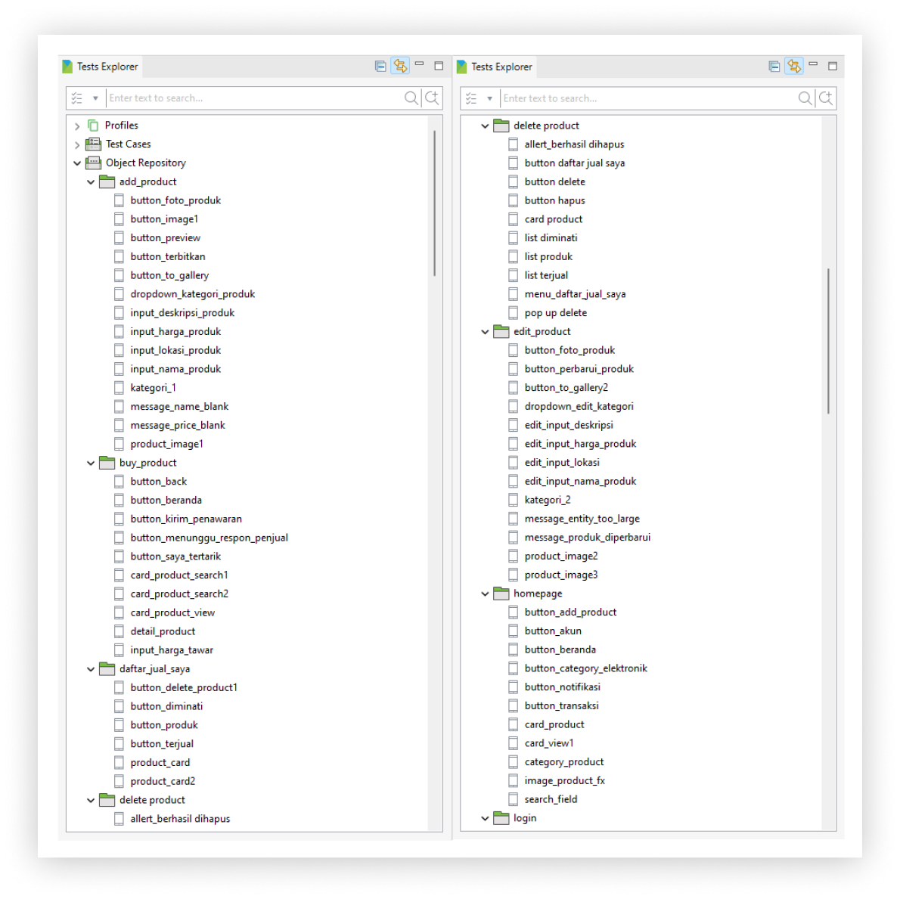

Page Object Model
Design Pattern that groups elements on a page or screen.
Benefits of Using POM
- - Independent, each page is created in a different class and is not related to each other.
- - Readability, makes it easier for us to improvise and read automation code
- - Maintainability, the code maintenance process will be easier
- - Reusability, can reuse page classes if needed in different test steps
Page Object Model Design in Katalon Studio
